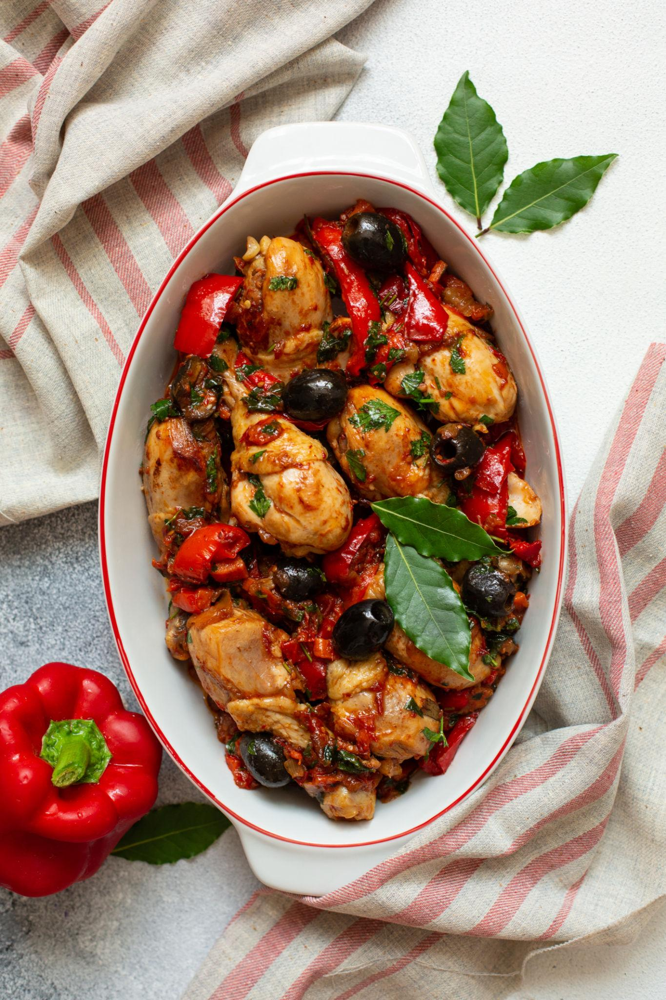

Kitchen Cacciatore

Ingredients(2-3 servings):
- 600 g chicken pieces
- 200 g tomato sauce
- 1 onion
- 1 garlic clove
- 100 ml red wine
- 50 g olives
- Rosemary, salt, pepper
- Olive oil
Cooking time: 50 minutes
Difficulty: Easy
Procedure:
- Brown chicken in olive oil
- Add onion and garlic, sauté.
- Pour wine and let it evaporate.
- Add tomato sauce, olives, rosemary.
- Simmer covered for 40 minutes.
- Serve hot with bread polenta
Home